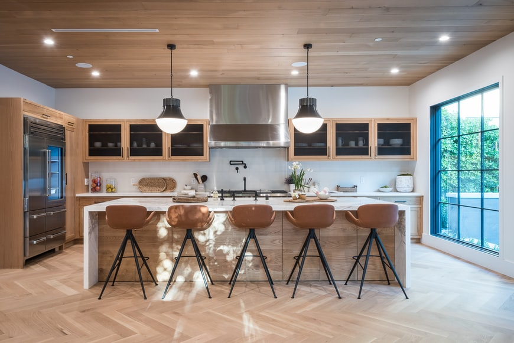
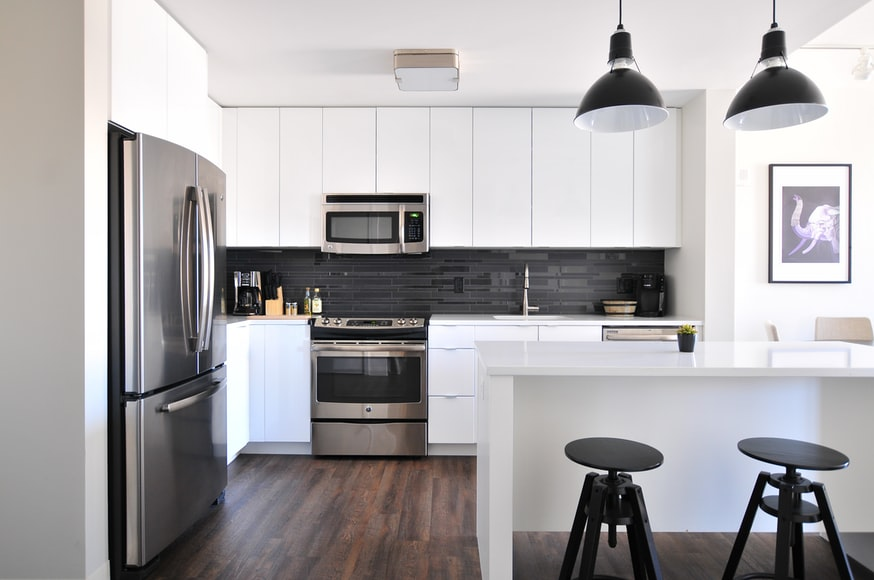
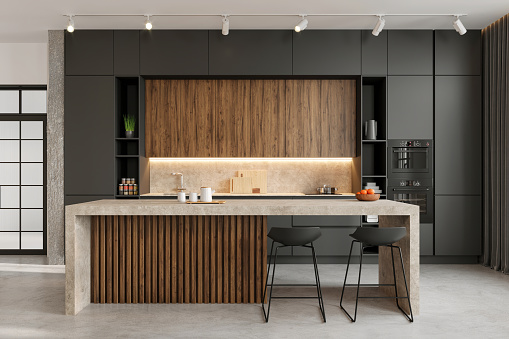
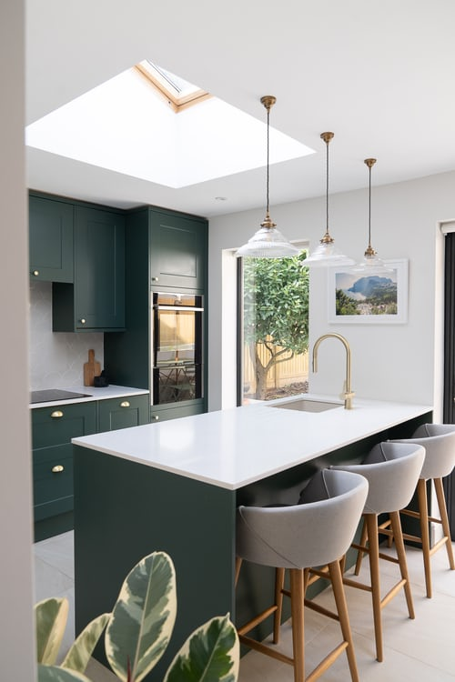

1-wooden kitchens

Wood is the preferred choice for many,
as it bears the classic, upscale character, and gives the kitchen a warm and natural touch.
the advantages of wood kitchens is:
* Durability. Elegant classic look.
* Ease of changing damaged units or painting them.
Disadvantages of wood kitchens:
*High cost
*It is difficult to clean ,especially if there is a buildup of grease.
2-Alumetal kitchen

Alumetal kitchen is a great choice for your kitchen if you prefer modern designs,
especially since you can design it in shapes that
reflect your personal character.
Features of Alumetal Kitchens:
*Light and therefore can be moved easily.
* Easy to clean. Average price.
. Disadvantages of aluminum kitchens:
*Easy to break, especially the hinges.
*Loss its luster with time.
3-Wood and aluminum kitchens

These kitchens are characterized by combining the advantages of wood and aluminum,
as they carry the elegance of the appearance of a wooden kitchen, but another material similar to aluminum is more durable.
* Features Wood and aluminum kitchens
:
* Elegant appearance.
*Easy to clean.
4-Acrylic Kitchens

It is one of the newest and most popular types of kitchens recently thanks to its elegant appearance, as the acrylic material gives its surface a glossy look that gives
the kitchen a luminous and elegant touch, and it is manufactured by pressing acrylic panels on artificial wood.
Advantages of acrylic kitchens:
*Elegant glossy appearance.
* Retain its luster for long years.
Disadvantages of acrylic kitchen:
*High cost.
* Requires constant cleaning.